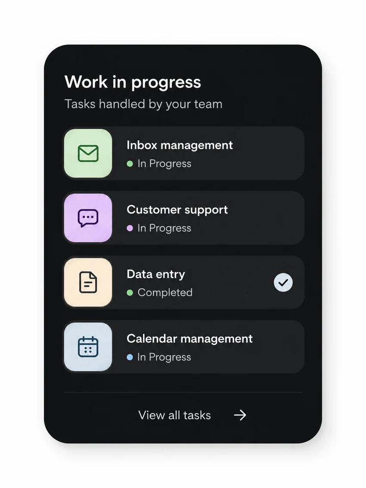
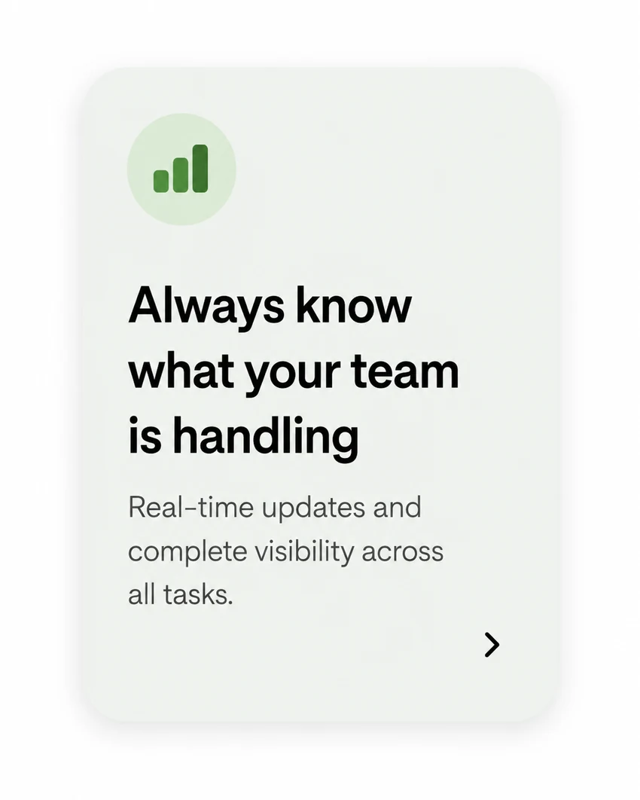
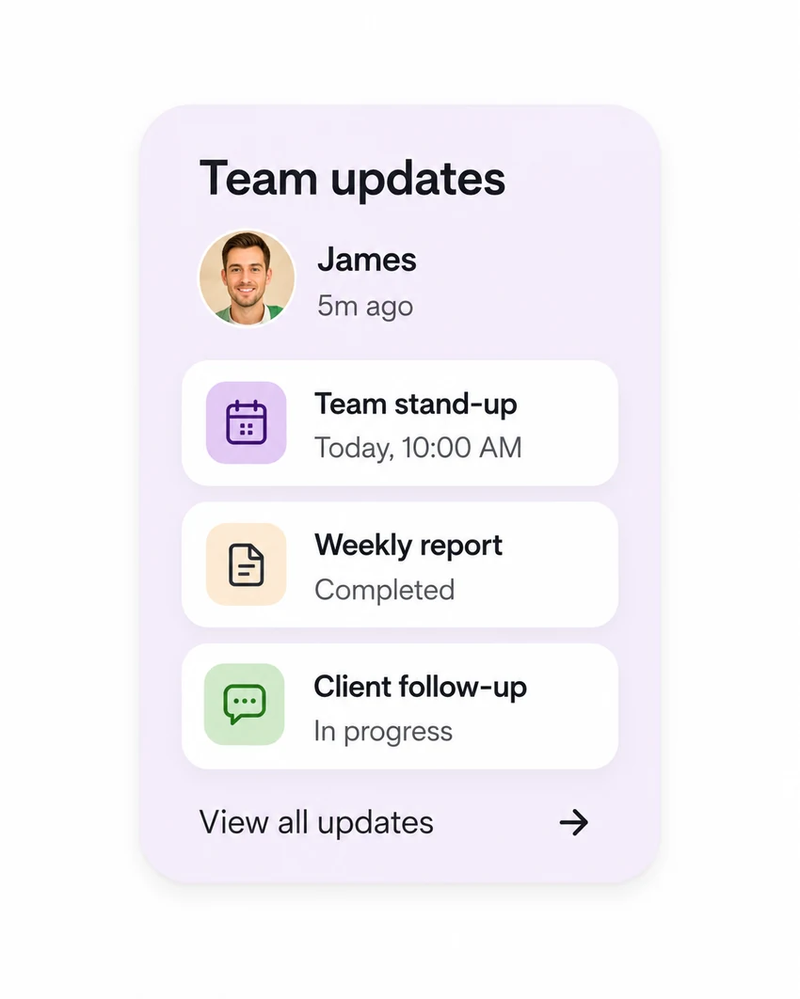
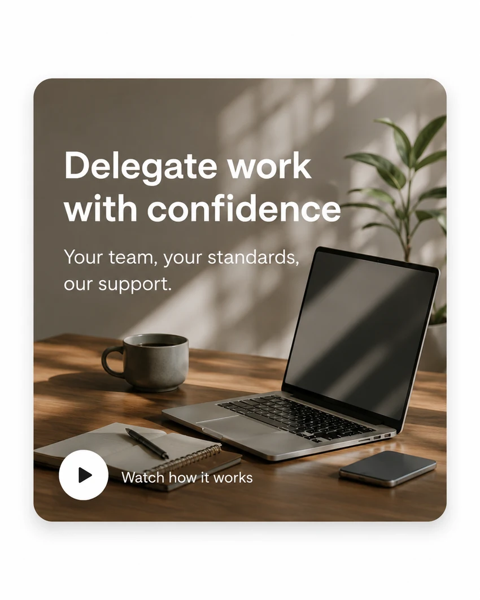
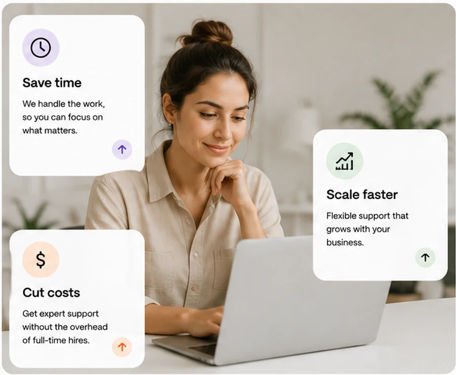
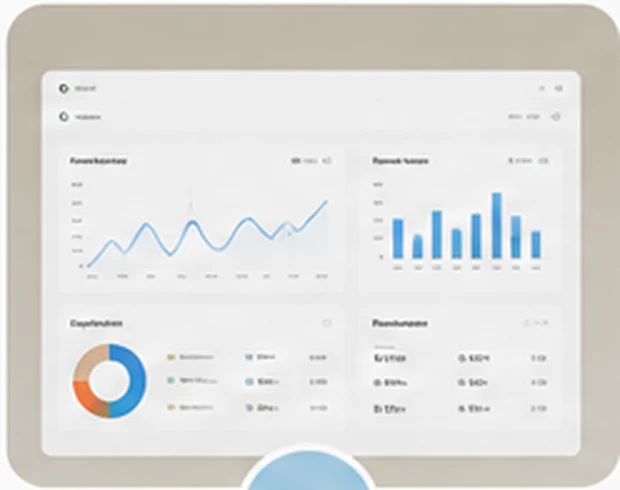

Customer Support
Friendly, professional support across email, chat, phone, and social channels.
Learn more →Outsource admin, customer support, operations, and back-office tasks with one reliable team built to help your business grow.
Flexible support for growing businesses




▶ Watch how it worksEverything in one place
From admin to customer support, we handle the tasks that keep your business running.
Friendly, professional support across email, chat, phone, and social channels.
Learn more →Skilled support for inboxes, calendars, admin, coordination, and daily operations.
Learn more →Bookkeeping assistance, invoicing, reconciliations, and organized reporting.
Learn more →Campaign, social media, content, and reporting support for consistent growth.
Learn more →Product, order, marketplace, customer care, and store operations support.
Learn more →Brand-aligned content that helps you stay visible, relevant, and consistent.
Learn more →Reliable first-line technical help, documentation, onboarding, and troubleshooting.
Learn more →Accurate data processing, list building, web research, and database maintenance.
Learn more →Simple process
A simple, reliable process to help you delegate faster and grow with confidence.
Tell us which tasks, roles, or business functions you want support with.
We match you with trained professionals aligned with your workflow and standards.
Start delegating, stay updated, and expand support as your business grows.
Why outsource?
Outsourcing the right tasks helps you save time, cut costs, and scale your business faster.

Free up your time to work on strategy, not small tasks.
Trained professionals, proven processes, and consistent results.
Adjust support as your business needs change.
Your data and business information stay in safe hands.
Access skilled experts from around the world.
Reliable support keeps your operations running smoothly.
Your ongoing workflow
We make outsourcing easy with a clear workflow designed around your goals.
Share your tasks and goals. We’ll understand what you need.
We match you with a professional suited to your tasks.
Your professional gets started and keeps you updated.

Stay informed with clear updates and communication.
Focus on growth while we keep the work moving.
FAQ
Everything you need to know before outsourcing with us.
Admin, customer support, data entry, bookkeeping support, marketing assistance, research, e-commerce operations, and other back-office tasks.
After discovery, we define the role, workflow, and start matching. Timelines depend on skill and coverage requirements.
Yes. You can choose a dedicated professional or managed team with clear ownership and accountability.
Documented workflows, quality reviews, performance standards, and regular check-ins keep work consistent.
Yes. Increase hours, add capabilities, or bring in more team members as your needs evolve.
We use controlled access, confidentiality practices, and role-based workflows tailored to your requirements.